呉に行ってきたった：2日目 てつのくじら館
公開日：
閉まってて涙目。明日出直す pic.twitter.com/unxVnBZaaS
— だるやなぎ に天使が舞い降りた！ (@daruyanagi) 2015年8月13日
「呉に行ってきたった：2日目 呉艦船めぐり - だるろぐ」のあとは、前の日に入れなかった「てつのくじら館」へ。
海上自衛隊の博物館やねんなぁ。
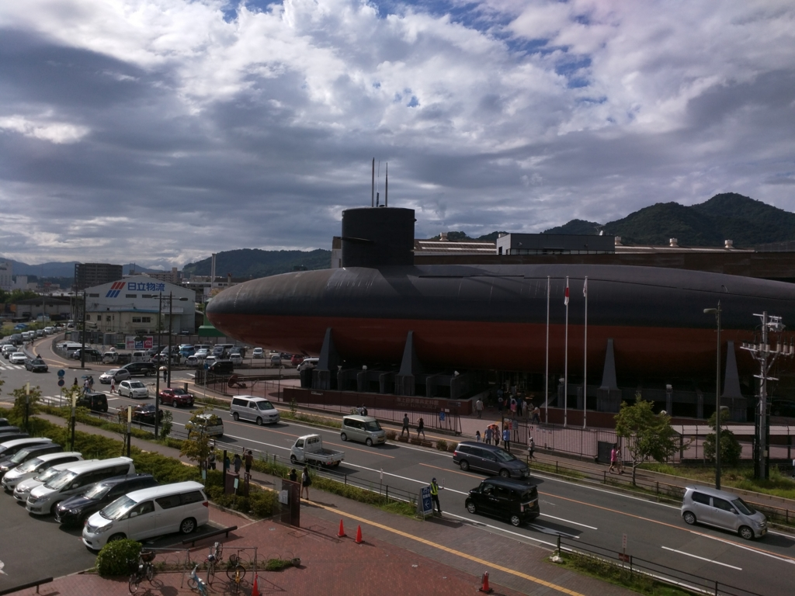
「ゆうしお」型潜水艦「あきしお」をそのままつかったインパクトある外見に圧倒されまくりだけど、それだけではなく、とくに掃海（機雷の除去、特別展らしい）と潜水艦については充実してた。まぁ、海上自衛隊は掃海からはじまったわけだし、多少はね？
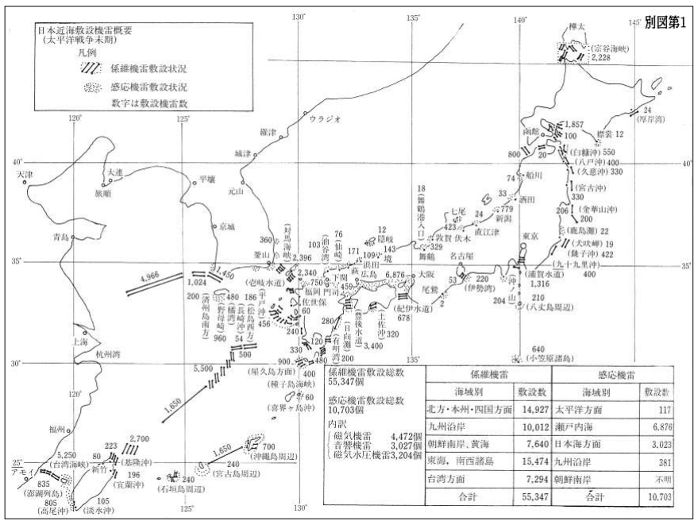
というのも、終戦直後の日本の海は、米軍が空からばら撒いた機雷でいっぱいだったんだね。陸は陸で、道路も鉄道も寸断されており、物資の大量輸送など不可能。せっかくの救援物資も届かず、全土が飢えることすら危惧されていた。そのため、海の道をもう一度切り拓く必要があったんだな。しかも、早急に。
そんな理由で、初期は“カミカゼ”まがいの掃海も行われたという。機雷だらけの海に特攻して、ちゃんと通れたところは安全って訳やな。必要に迫られてのこととはいえ、どれだけ当時の日本が追い詰められていたかが実感できる。
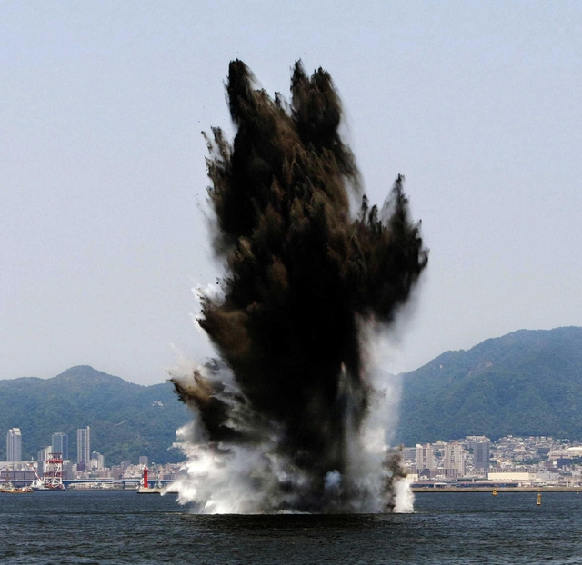
こうした犠牲のおかげで、ようやく下関から大阪まで、瀬戸内海に一本の細い航路が開かれた。それが徐々に広げられ、今ではおおむね安全に、どこでも船が通れるようになったというわけ。“おおむね”と但し書きをしたのは、今でも機雷の除去は行われているからだ（写真は2010年、神戸港沖）。
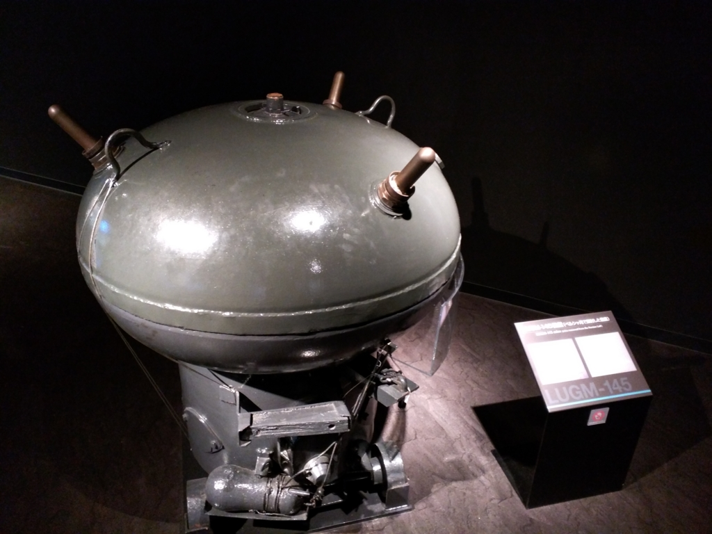
機雷にはさまざまな種類があるが、だいたいは海底に植え付けるか、そこからヒモで係留された状態で設置されており（海面に漂う浮遊機雷は、国際法で禁止されている）、磁気や音響センサーの感知により作動する。
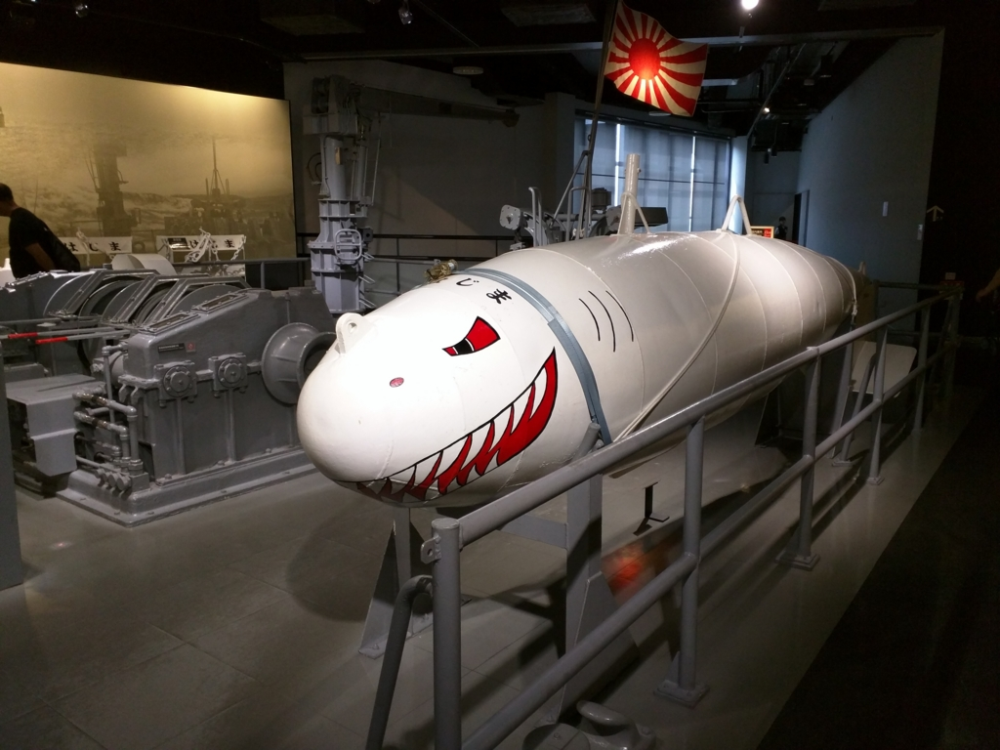
そのため、ヒモを切断して浮遊させてから機銃を打ち込んだり、磁気や音響をだすオトリを曳航して安全な位置から爆発させたり、ときにはダイバーが近づいて処理をしたりするんやのぅ。もちろん、船（掃海艇）が磁器を発しては機雷に触れてしまう（触雷）ので、船体は木かプラスチックでなければならないし、音にも気をつけなければならないだろう。いろいろ大変やな。
朝鮮戦争のときにこっそり“海外派兵”されていたなんていう話は知ってたけど、実際に掃海具なんかを見るのは初めてで、とても勉強になった。というか、ちょっと浅学が恥ずかしいぐらい。
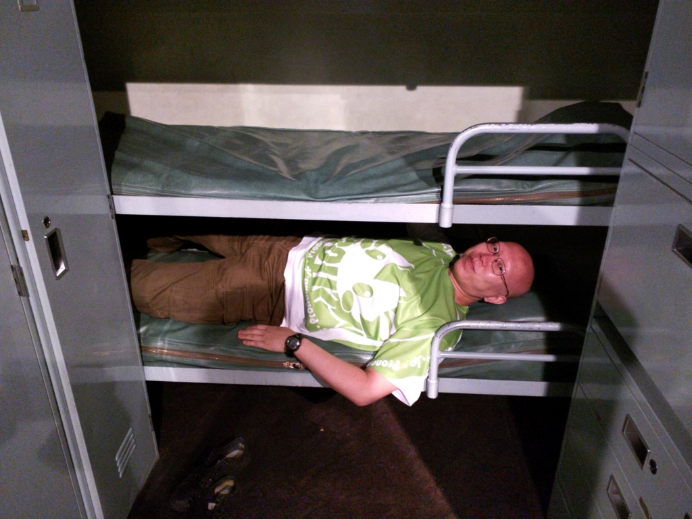
あとは、潜水艦の歴史と体験コーナーとか。たとえば船員の寝る三段ベッドにも寝そべることができるのだけど、とても狭い。@jz5 が挟まって出られなくなってた。あとは、椅子の中にジャガイモを隠してあるとか（場所の節約やな）、そういう感じの。残念ながら「あきしお」の中は撮影禁止だったけれど（人の流れが詰まってしまうからだそうなので、ガラガラなときだったらいいのかもしれない）、潜望鏡が覗けたりして面白かった。
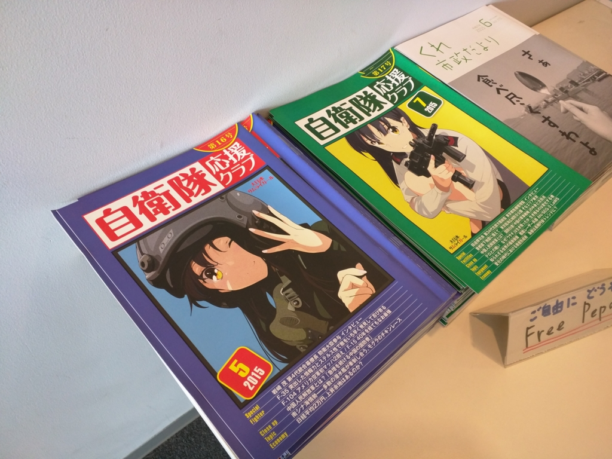
お土産に萌え萌えな自衛隊のフリーペーパーをもらって帰った（広島のホテルで読んでみたけど、割と面白かったかもしれない）。
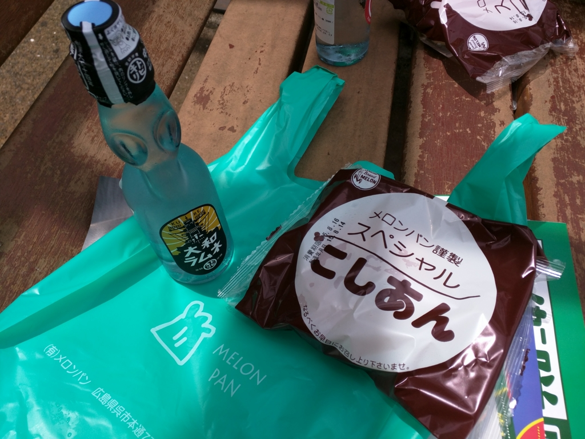
そのあと、ゆめタウン呉│イズミ・ゆめタウン WEB（歴史秘話ヒストリア「幻の巨大潜水艦伊400」に出てきた元乗組員の爺さんがやってる店やな）のなかにある「メロンパン」というお店で「こしあん」を買って食べた。
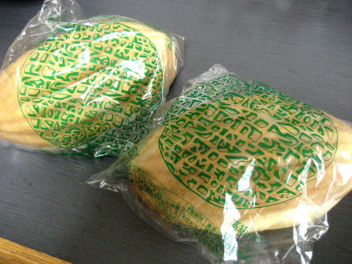
ほんとは「メロンパン」で「メロンパン」を買うつもりだったのだけど（こんな形でもメロンパンなんだそうだ）、人気らしくて売り切れてたみたい。でも、「メロンパン」の「こしあん」もズッシリしてて食べごたえがある。ゆめタウンでかった「大和ラムネ」と一緒に、近くの公園でいただいた。割とお腹いっぱい。
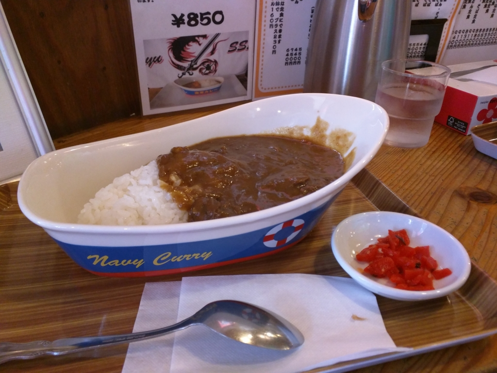
……にもかかわらず、その20分後ぐらいにはカレー食ってた。
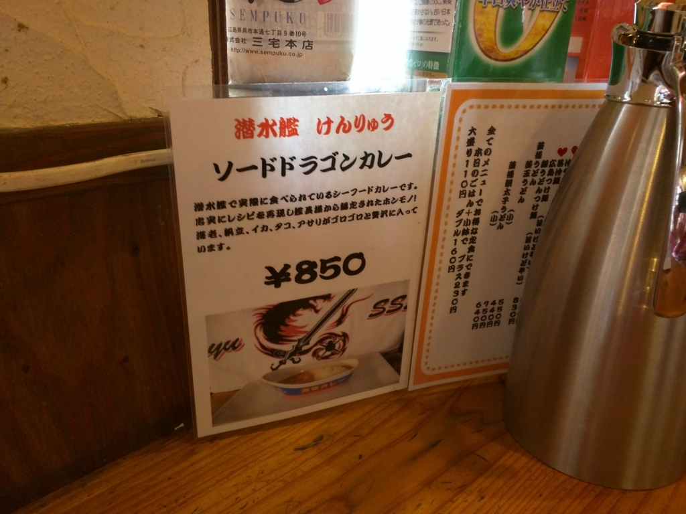
これは潜水艦「けんりゅう」で食べられているレシピだそうで、その名も「ソードドラゴンカレー」。食べてみると、割とシーフードだった。
このお店、本当は麺類のお店みたいで、寿司屋で焼肉頼むかのような、変な罪悪感がある。でも、キニシナイ。ごちそうさまでした。
こうして、パンパンになったお腹を抱えながら、僕らは JR 呉駅から広島へと向かうのだった。続く……かも。